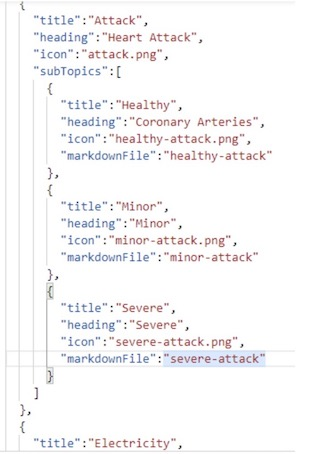
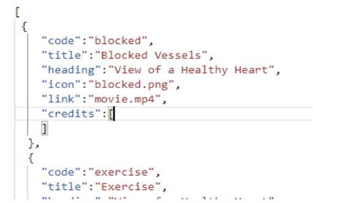
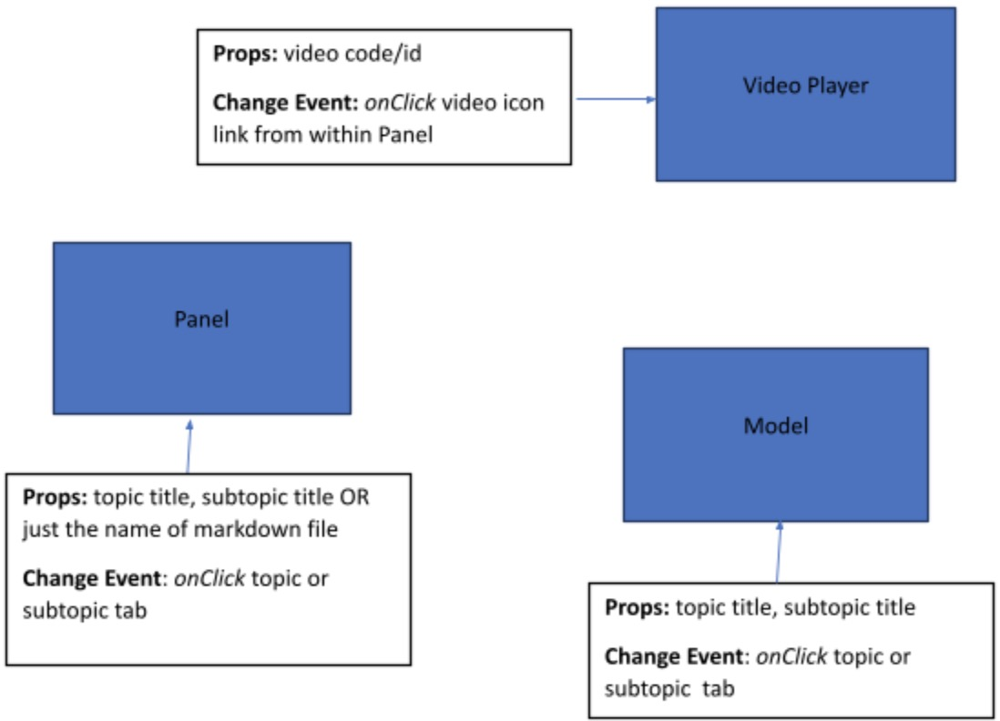

1. Heart App Overview¶
1.1. Introduction:¶
This document provides a brief overview of the new heart vue.js app. The app will be built using Vue3. Basically, it will cover main components and data files of the application. There might be some other small components (to facilitate reusability) that I may not mention here, as this document is primarily aimed to show the way the data will be saved and the flow of information (called as props in vue.js) among main components.
Terminologies: Main tabs like (Attack, Electricity etc) are referred to as “topics”. The sub tabs like (Healthy, Minor, Severe etc) are referred as “Subtopics”.
Data Files: The data will be saved in the following files:
- Topics.json, containing information related to topics and their subtopics
- 
- To store information for each subtopic, we can have multiple options. The two proposed ways include
Panels.xml: contents of each subtopic will be saved via xml tags. The application will read these tags and display contents accordingly. The format in which various elements are displayed will be controlled by code so, full potential of CSS styling can be used to design or to make things responsive. This means less control exercised by users, if they want to change things like design or want to add a new type of element that is not defined in existing xml etc. But still, it can be extended easily by a developer.
Markdown file: Saving contents of each subtopic in an individual markdown file. The application will read the contents from the file and display in the allocated slot. This way, the user can have complete control of content. But the application may not be able to utilize the full potential of CSS in displaying contents.
Videos.json, containing information relevant to each video
There might be other data files for team/people as in “about” information (needs further discussion)
1.2. The main app will be split into left and right pane (as it is currently)¶
The left pane includes:
Main Heading
Subheading
-Panel (component), displaying contents of clicked subtopic from (either markdown or xml, as discussed above in data section)
Menu (the tabs and subtabs populated based on topics.json)
The Right pane will switch between two components i.e. Video Player and Model.
Check the diagram below to understand the change events of these components.
Note: Since the work on the Model component will be done at the end when the rest of the app is completed, the props for it may not be final. Right now, when I refer to the Model component, it includes everything i.e. the heart model, the ECG, pressure and heart rate modifier.
